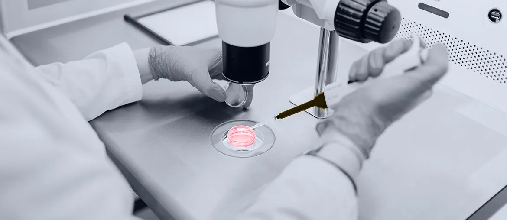

Read the model
Map the Simulink flow, inputs, outputs, data rules, and target runtime with KWAN's project lead.
For Joao Mauritti
Saw KWAN is hiring for MATLAB/Simulink and full-stack roles. That usually means a client project needs both model work and production software support soon, without more delay.
That hiring signal says KWAN is scaling a delivery need that is narrower than normal web work. MATLAB and Simulink usually sit near controls, embedded logic, or industrial systems. The slow part is often the handoff from model to tested C++ or Python code. If that gap stays open, one client stream can wait. Recruiters then keep searching for a rare profile.
The aim is not to replace KWAN's hiring. It is to keep client delivery moving while the exact profile is found.
Engagement model: a dedicated squad working under KWAN or the client's PO/PM.
Team shape: tech lead, two C++/Python engineers, full-stack engineer, QA automation engineer.
Optional AI/ML support when simulation data needs prediction work.
Map the Simulink flow, inputs, outputs, data rules, and target runtime with KWAN's project lead.
Turn one model path into clean C++ or Python code, with clear API points for the client system.
Create unit, regression, and hardware-adjacent test checks so model behavior is not lost during handoff.
Document build steps, edge cases, and open risks, then demo progress every week to the PO.

Elinext runs engineering teams on a C++/C# manufacturing platform, helping modernize integration-heavy MES software.
Read case study
Elinext built an online monitoring layer for lab equipment, linking device data to Java, C++, WebSocket, and cloud services.
Read case studyDiscuss one active simulation workstream and a safe pilot.
Talk to Elinext